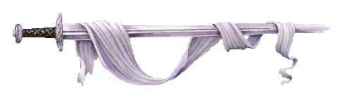

Root note in Hertz:
Tempo in Beats per Minute:
Gregorian Mode:
Reverb Amount:
Reverb Time:
Chorus Amount:
Turn off and on again to apply new settings.Root note in Hertz:
Tempo in Beats per Minute:
Gregorian Mode:
Reverb Amount:
Reverb Time:
Chorus Amount:
Turn off and on again to apply new settings.Simply press "ON" to start the Dungeon Soundtracker!
Settings will not update in real time, you must turn the soundtracker off and on again to apply any changes.
Root notes between 200 Hz and 600 Hz work best.
40 bpm is quite slow, 140 is quite fast.
Dorian is adventurous, Phrygian is mysterious, Lydian is regal, Mixolydian is whimsical.
Dungeon Soundtracker is meant as a tool for Game Masters, to give free, endless background music for any kind of RPG or fantasy scenario.
The core of this website is the wonderful Tone.js, which creates all the sounds and effects. Huge thanks to everyone who has worked on Tone, I can't even imagine the work needed to make a tool like that!
Made by Andrew Ames in 2018 for MUMT 301 at McGill University, under professor Gabriel Vigliensoni.
Huge thanks to Gabe Downs + Prof. Vigliensoni for your advice, thanks to Kolin Biggs for letting me stay with you while I completed this!